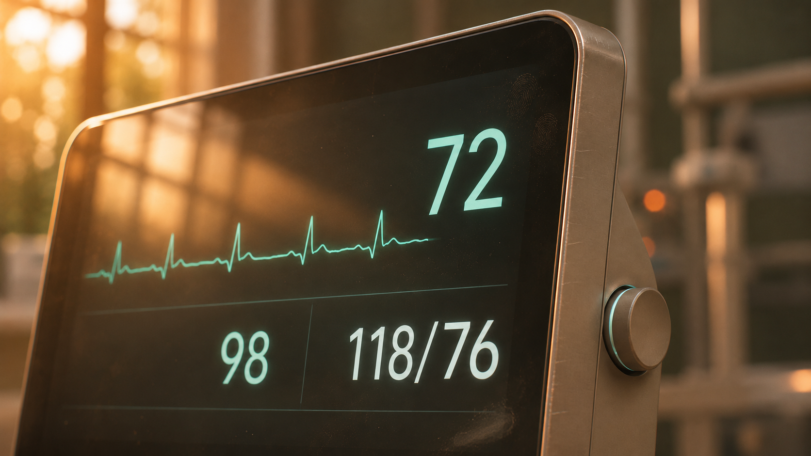

Free
Health Check?
Better outcomes begin with a clearer picture.
What you walk away with
- Your current environment, mapped
- Key observations
- Potential improvements
- Recommended next steps
All done
Thanks.
Consider us all ears.
We’ll review what you’ve shared and reach out to understand the next step.
A better digital workplace starts with understanding your challenges.
Every environment is different. We start by listening, understanding what matters to you and helping you identify how things can work better.
No assumptions.No unnecessary complexity.Just a clear starting point.
Technology is
only part of the picture.
Understanding the people who use it, and the challenges they face is what matters.
Our Health Check gives you a clear view of your current digital workplace, helping you understand what’s working, where improvements are possible, and what to focus on next.
Simple process.
A shared understanding.
Every good partnership starts with listening. With this straightforward Health Check, we start with understanding your environment, review the key areas and provide recommendations based on what we found.
- 1
Start with a conversation
We’ll learn about your environment, understand the challenges you’re facing and establish what you’d like to get out of the health check.
- 2
Review your environment
We’ll assess your existing VDI setup, looking at performance, configuration, capacity and potential areas of risk. We’ll document our findings so you have a clear picture of how things stand.
- 3
Get a clear view of what’s next
We’ll walk you through the findings, explain what’s working well and highlight the areas worth prioritizing. Then together we can discuss the next steps!
Guessing is great for quizzes.
Not so much for IT.
We review the key elements that shape your working environment: performance, security, user experience and infrastructure. The result is a clear overview of what works well, what can be improved and where future opportunities exist.

Workplace
How employees access and use their digital environment.
Infrastructure
How your technology foundation supports everyday work.

Security
How access, data and systems are protected.
User experience
Where technology helps or creates friction.
Future readiness
How prepared your environment is for change.
Technology works better
when people work together.
At Spadafy, we believe good technology partnerships are built on understanding and strengthened over time. We bring the experience to assess your environment and the human perspective to help you make sense of it.
We’re all ears
All done
Thanks.
Consider us all ears.
We’ll review what you’ve shared and reach out to understand the next step.